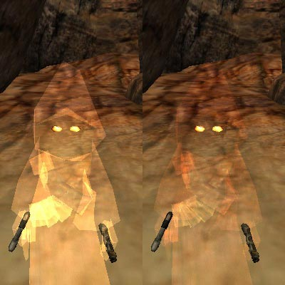
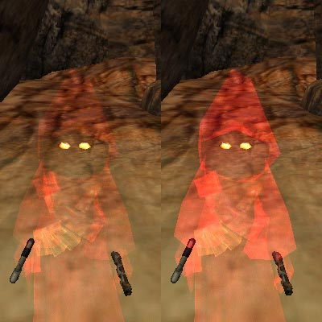
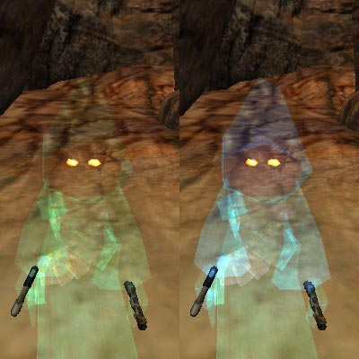
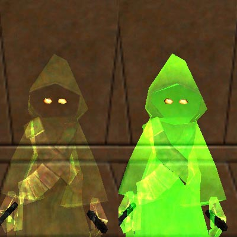

Iktulam, the Jawa Warrior
przeczytaj wspak "Iktulam" : )
Opis
Skin jawy z pó³prze¼roczyt± os³onk±
Dostêpne s± wersje dru¿ynowe i jeden ukryty skin!
Do skinu za³±czony jest bot.
W sk³ad tego modu wchodz± te¿ nowe d¼wiêki
Za³±czone s± te¿ 3 NPC! (2 wrogów i 1 przyjaciel)
Bardzo sympatyczne stworzonko - polecam




Autor
MeusH
amadeuszw@wp.pl
jedi@delart.pl
Instrukcje
Rozpakuj ¶ci±gniêty plik do "gamedata\base" w katalogu gry
jawawarrior.zip 1,81 MB